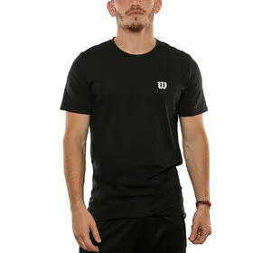
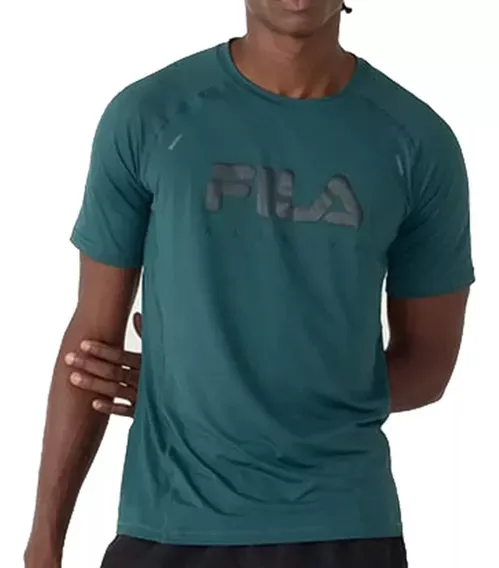

El término "oversize" se refiere a prendas de ropa que son diseñadas y
fabricadas para ser significativamente más grandes que las tallas estándar. Este estilo busca lograr
un aspecto holgado, relajado y cómodo. Las prendas oversize suelen tener dimensiones más grandes en
comparación con las tallas convencionales, lo que resulta en una silueta más amplia y suelta.
El estilo oversize puede aplicarse a una variedad de prendas, como camisetas, suéteres, chaquetas,
pantalones y más. A menudo, se busca crear un efecto de holgura y comodidad, y algunas personas
optan por prendas oversize para lograr un estilo más relajado o informal.
Este estilo ha sido popular en la moda durante varias décadas y ha sido adoptado por diseñadores y
marcas de moda de todo el mundo. Puede ser una elección de moda tanto para hombres como para
mujeres, y se adapta a diversas ocasiones dependiendo de cómo se combine con otras prendas y
accesorios.
El estilo sport, también conocido como estilo deportivo, se refiere a la moda inspirada en la ropa
deportiva y activewear. Este estilo combina elementos cómodos y funcionales típicos de la
indumentaria utilizada para actividades deportivas con prendas de uso diario. A lo largo de los
años, la moda deportiva ha evolucionado para convertirse en una tendencia de estilo de vida popular.
El estilo sport no se limita solo al ámbito deportivo; se ha fusionado con otros estilos de moda,
dando lugar a tendencias como el "athleisure", que combina la comodidad de la ropa deportiva con la
estética casual y elegante para su uso en situaciones cotidianas. Este estilo es popular tanto para
hombres como para mujeres y puede adaptarse a una variedad de ocasiones informales.


Estilo Boxy Fit
El término "boxy-fit" se refiere a un estilo de ropa que tiene
una forma cuadrada y holgada en lugar de ajustarse al contorno del cuerpo. Este estilo destaca por
su silueta amplia y recta, creando una apariencia más suelta y relajada. Las prendas con corte boxy
a menudo tienen hombros anchos y líneas rectas que caen verticalmente desde los hombros hacia abajo.
El corte boxy puede aplicarse a una variedad de prendas, incluyendo camisetas, suéteres, chaquetas y
hasta abrigos. Este estilo ha sido popular en diversas épocas de la moda y puede ofrecer una
alternativa cómoda y moderna a los cortes más ajustados y estructurados. La versatilidad del corte
boxy permite su incorporación en diferentes estilos, desde looks casuales hasta atuendos más
elegantes, dependiendo de cómo se combine y accesorice.